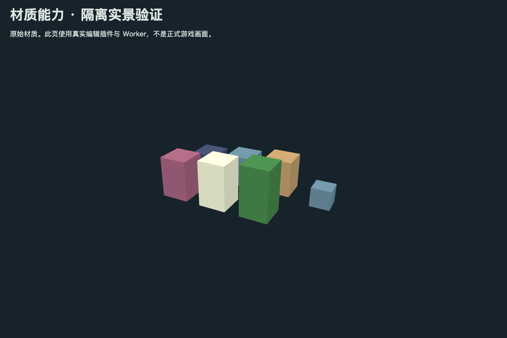
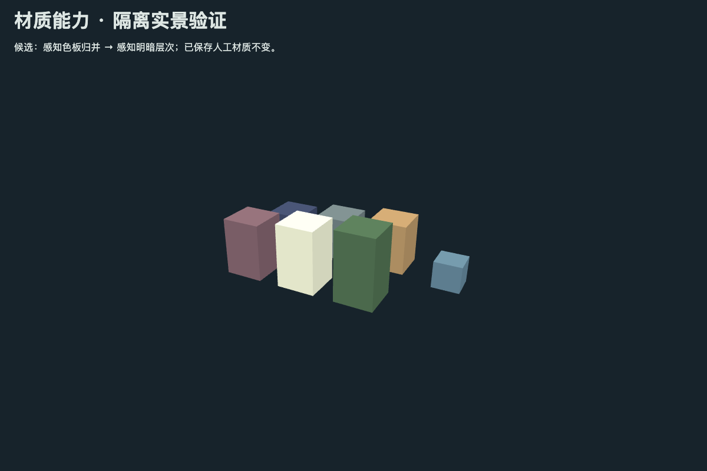
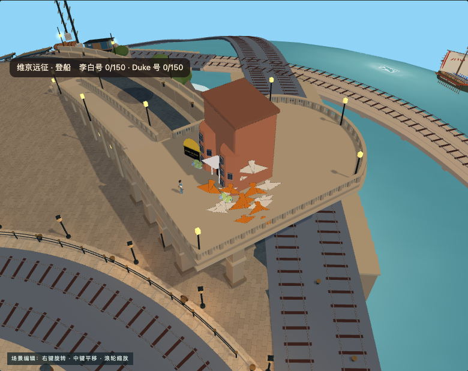
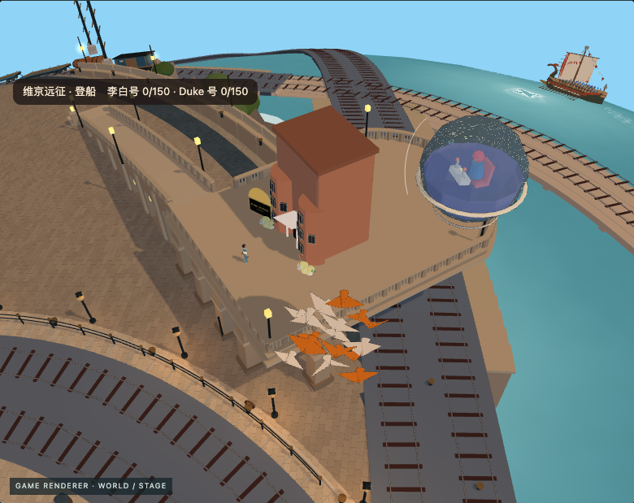

使用真实通用场景编辑插件和两个 Worker 的隔离样例。并非正式游戏场景，也不是AI目标图。


人工调色、模型几何、场景外共享材质保留；比较、放弃、保存失败、保存后恢复已通过。新接口只做材质表适配，不等于完整World色体或三角面contrast texture。
新隔离浏览器、正常游戏iframe；两项组合真实修改25种材质，切换对照和放弃后全部恢复，场景存档未写入。原有湖水覆盖其他场景的渲染范围问题已修复。固定镜头下动态鸟群、船与飞行器会自然移动。

